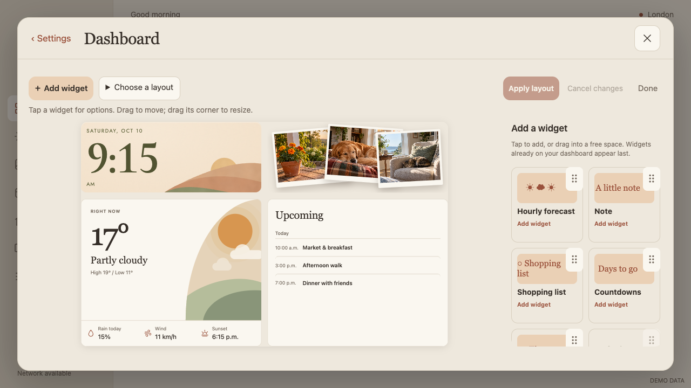
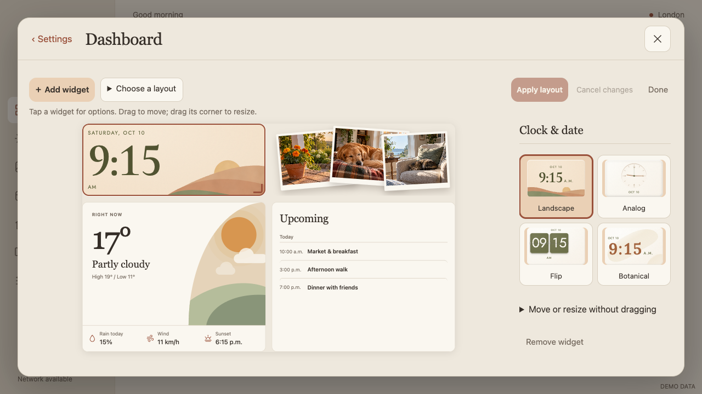
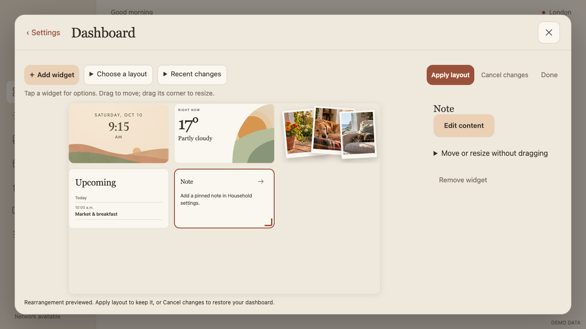

13 October 2026 · Synthetic previewsArchived editor experiment — reverted
This implementation was rejected and reverted. These screenshots document the experiment; they do not show the current app.
The canvas leads. Add widgets, choose layouts and inspect the selected widget through one contextual panel. Existing data and staged Apply/Cancel behavior are preserved.
A larger, calmer editing surface
The editor opens without an arbitrary clock selection or permanent sidebars. Add widget and Choose a layout are grouped together. Apply and Cancel stay in the toolbar, freeing vertical space. At 1280 × 720 the canvas grew from approximately 557 × 341 to 681 × 417 CSS pixels.
Templates beside the result
Layout choices sit beside the canvas rather than covering it. Named clock, photo, weather and agenda regions make the schematic previews easier to understand. The panel explains that templates replace the draft and cancellation restores the saved dashboard.
Short landscape
The same tools fit a short landscape screen without reducing the dashboard to the previous tiny thumbnail. Optional tools share one panel; the canvas remains visible.
Large landscape
The canvas uses the larger workspace. A narrow permanently padded widget rail no longer consumes space.
Add widget
A two-column gallery puts available widgets first. Already-added widgets can be selected rather than appearing as dead controls. Tap to add or use the drag handle.

Selected widget
Clock styles appear when the clock is selected. The resize affordance is a corner grip with a generous touch target. Optional directional controls support moving and resizing without dragging; no coordinate fields return. Household widgets offer Edit content.

Explicit placement recovery
When a widget needs more space, Skylit offers a rearrangement preview. It does not silently rearrange the dashboard. Apply keeps the preview; Cancel restores the saved layout.

Other changes
- Pages and Household moved out of the arranging toolbar into Frame settings.
- Weather and Calendar navigation arrows are suppressed in the editing preview.
- Status messages use Apply layout consistently.
- The separate segmented-control refinement is included in the built APK.
Verification and limits
88 JavaScript tests and 18 Python tests passed. All 13 Settings browser acceptance groups passed. Focused editor checks cover contextual panels, widget selection, remove/re-add, explicit rearrangement, rollback, non-drag resize and short-screen tools with no runtime errors. The APK was built and its signature verified.
Screenshots use only synthetic preview content. These changes have not been installed or physically touch-tested on the frame, committed, or published. Template previews remain lightweight labeled diagrams rather than complete miniature renders.